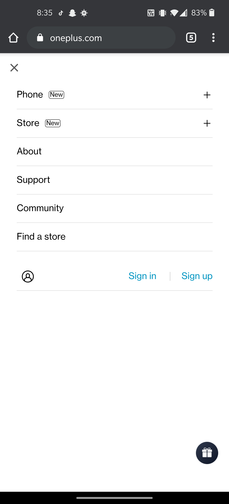

Hick's Law
One Plus
oneplus.com
I think that this menu is very good at making sure you can find what you're looking for. It has it broken down into very distinct and easy to understand catagories. Its simplicity and concise number of choices helps people find their way through the website without getting lost or losing interest.
White Space
Best Buy
bestbuy.com
I think that best buy makes great use of white space to help prevent the user from having too much info to handle at once. the space helps you pick out what is grouped together and prevents it all from running together. You can also see the space addes in the search bar and around the button to help you read whats in the bar, and have space to click the button.
Visual Heirarchy
Cisco
cisco.com
Cisco does a great job of making sure you can tell what their stance is with social justice. Its the largest and most prominent part of the page that you see before anything else. after seeing it and the learn more button, your eyes start to wander and explore the rest of the page, but the hierarchy has already done its job in making you read what they want you to read first.